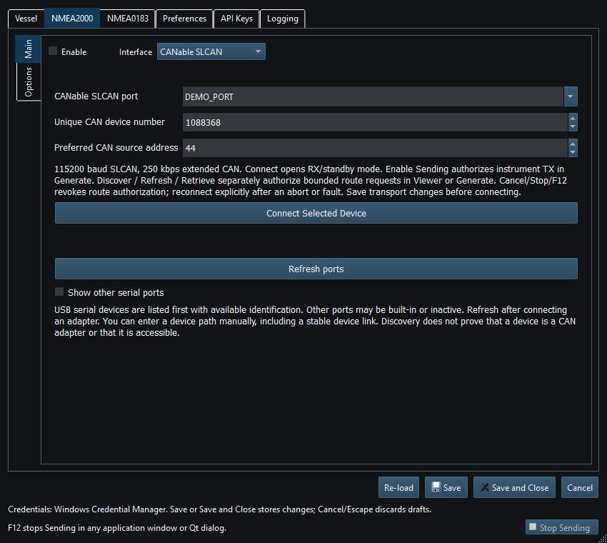

CANable SLCAN connects compatible SLCAN adapters on Windows and Linux for NMEA2000 reception and transmission. It uses serial framing for 29-bit CAN, not NMEA0183 sentences.
The established configuration uses 115200 baud SLCAN serial, 8N1, and 250 kbit/s extended CAN. Adapter firmware must implement the expected SLCAN behavior. Do not substitute a binary USB-CAN protocol merely because it uses a serial USB chip.
Connection alone does not authorize instrument Sending. Use Viewer for supported reception; in Generate review instruments and explicitly Enable Sending. Stop/F12 and mode/transport changes revoke output/service permission. Reconnect explicitly after an abort/fault when status requires it.
The chartplotter route dialog provides its own discovery and retrieval controls. General device discovery in Diagnostics is not available for serial CAN adapters.
Missing/disconnected device: check the cable, refresh and reselect. Access denied/busy: close another serial application and verify OS permissions. On Linux, membership/permissions for the serial device may require an administrator-managed change and a fresh login session; this Help does not modify groups or udev rules. Do not repeatedly Save a stale port to conceal a physical disconnect.

Figure 68. CANable SLCAN port and device identity settings in Setup. Click to enlarge.
NMEA2000 Overview · NMEA0183 Overview · Network NMEA2000 · SocketCAN · Waveshare USB-CAN-A · Actisense NGT-1 · Signal K · Device Discovery and Diagnostics · Connection Troubleshooting · Enable, Dispatch and Sending · Route Overview · Engineering Units